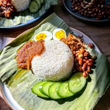

Nasi Lemak

Description
The ultimate Malaysian comfort food, featuring fragrant rice cooked in coconut milk and pandan leaves, served with a fiery sambal, crunchy peanuts, fried anchovies, hard-boiled eggs, and fresh cucumber.
Ingredients
- 2 cups long-grain rice (washed and drained)
- 1 cup thick coconut milk
- 1 cup water
- 2 pandan leaves (tied into a knot)
- 1-inch piece of ginger (sliced)
- 1 stalk lemongrass (bruised)
- 1 tsp salt
- 15 dried chilies (soaked in hot water and deseeded)
- 1 large onion
- 3 cloves garlic
- 1 tsp toasted shrimp paste (belacan)
- 4 tbsp cooking oil
- 2 tbsp tamarind juice
- 2 tbsp sugar
- 1/2 cup raw peanuts
- 1/2 cup dried anchovies (ikan bilis)
- 2 hard-boiled eggs (halved)
- 1 cucumber (sliced)
Steps
- Cook the Rice: In a rice cooker, combine the rice, coconut milk, water, pandan leaves, ginger, lemongrass, and salt. Cook as you would normal white rice, then fluff gently once done.
- Blend the Sambal Paste: Blend the dried chilies, onion, garlic, and shrimp paste into a smooth chili paste.
- Cook the Sambal: Heat 3 tablespoons of oil in a pan over medium heat. Fry the chili paste for about 8 to 10 minutes until the oil separates. Stir in the tamarind juice, sugar, and a pinch of salt. Simmer until thickened, then set aside.
- Fry the Toppings: Heat the remaining oil in a clean pan. Fry the peanuts until golden brown and crunchy, remove them, and then fry the dried anchovies until crispy.
- Assemble: Place a mound of the fragrant coconut rice on a plate (traditionally on a banana leaf). Arrange a spoonful of sambal, a handful of fried peanuts and anchovies, a boiled egg half, and cucumber slices around the rice.